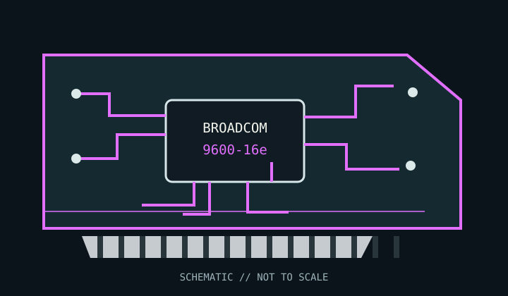

[ INDIVIDUAL COMPONENT // STORAGE / DISK I/O ]
Broadcom HBA 9600-16e
16 external lanes on SFF-8674 external SlimSAS connectors (connector count per product brief); SAS 24 Gb/s, SAS 12/6 Gb/s, and SATA 6 Gb/s; external NVMe needs a supported switch/JBOF topology. This model-specific archival record distinguishes adapter functionality from host-platform compatibility.

MODEL SCOPE: Broadcom HBA 9600-16e. Verify PCB revision, full manufacturer part number, firmware package, bracket and supplied cable set; OEM equivalents may differ.
Reference specifications
| Model / SKU | Broadcom HBA 9600-16e |
|---|---|
| Controller / chipset | Broadcom SAS4116 24G SAS-4 Tri-Mode controller |
| Host bus / lanes | PCI Express 4.0 x8 host interface; 16 external device lanes |
| Ports / connectors | 16 external lanes on SFF-8674 external SlimSAS connectors (connector count per product brief) |
| Supported disk protocols | SAS 24 Gb/s, SAS 12/6 Gb/s, and SATA 6 Gb/s; external NVMe needs a supported switch/JBOF topology. |
| RAID / HBA mode | HBA/eHBA mode; no hardware RAID volume management on this HBA SKU. Disks are exposed to the operating system; software RAID/filesystem features are host-side. |
| Firmware / drive compatibility | Use Broadcom firmware and utilities for the exact HBA model and board revision. Confirm drive sector format, enclosure/backplane protocol routing, SAS expander support, cable pinout, and negotiated link rate; do not cross-flash MegaRAID or OEM firmware. |
| OS / driver notes | Use a Broadcom-supported OS driver package for the exact adapter and OS release. Linux commonly uses the mpt3sas driver; validate the vendor OS/driver matrix for Windows, VMware, FreeBSD, and enterprise distributions before deployment. |
Compatibility, care & archival notes
- eHBA/HBA mode, not hardware RAID. Verify SFF-8674 cable and enclosure support, power and thermal requirements; external NVMe is not implied by a SAS link and generally needs a validated switched topology.
- PCIe slot shape does not guarantee electrical lane wiring or sufficient bandwidth; check motherboard bifurcation and resource-sharing rules.
- Back up data and record firmware, driver, enclosure, disk model, sector format and link negotiation before changing a production host.
Sources & further reading
- Broadcom — 9600 Series 24G PCIe 4.0 Tri-Mode Adapters Product Brief (manufacturer product brief)Official family specification covering the model line, interfaces, supported storage modes, and available adapter configurations.
- Broadcom — 96xx PCIe 4.0, 24G SAS MegaRAID and HBA Tri-Mode Storage Adapters User Guide (manufacturer user guide)Official installation, cabling, firmware, configuration and compatibility guidance; consult the exact model-specific tables.